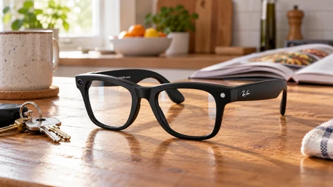
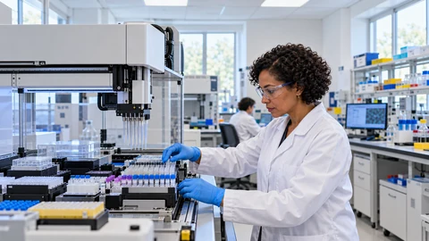

Tech & AI
Meta Releases a 120-Task Test for Everyday AI Glasses Assistants
InteractiveWorld tests how AI assistants help with everyday tasks, but a simulated benchmark is still a step away from reliable wearable products.

InteractiveWorld tests how AI assistants help with everyday tasks, but a simulated benchmark is still a step away from reliable wearable products.
Microsoft’s Agensh release lets researchers test self-organizing AI coding teams. Higher benchmark scores still leave a demanding economic test.

The new nonprofit will target biological-threat detection and medical research. OpenAI and Anthropic pledge up to £200 million in additional support.

Block’s Dessa research preview explores conversation without text-based training. Outside testing and a public release remain separate hurdles.

The new model is available through hosted services. Pricing and research claims give buyers more to test, while downloadable weights remain promised.

Amazon is keeping capacity for on-demand users even as large commitments reach into 2028. Its next earnings report will test the investment story.

A roughly $3 billion valuation accompanies a separate $55 million data agreement with Tempus as the companies target better drug-development decisions and neuroscience trials.

The iPhone Duo’s retail debut shifts attention from preorder queues to supply, practical app support and the case for a $1,999 starting price.
Reported tower talks would extend Starlink beyond satellites. Spectrum approval, construction and network economics remain major hurdles.

Japan’s mobile operator paused earthquake, tsunami and evacuation alerts for emergency maintenance, showing the operational cost of patching shared software.

Uber is expanding a 1,000-person pilot across its workforce. The rollout tests whether AI agents can turn broad access into measurable work savings.

Carbon-X combines DNA sequences and language in an open model. Local deployment and developer benchmarks come with important research limits.
Reporting and explainers from the full archive.